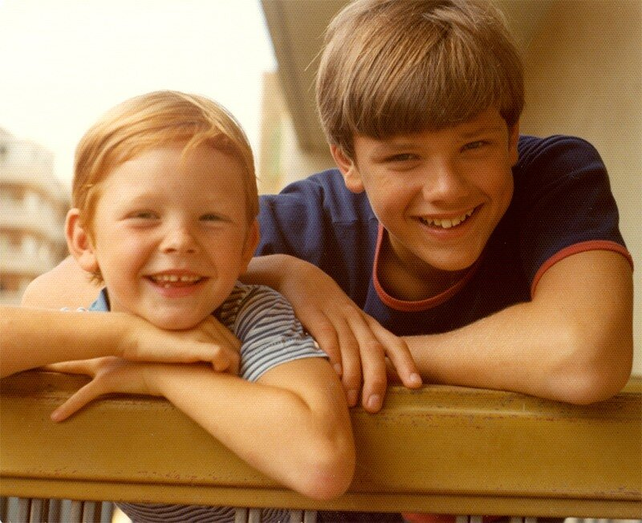
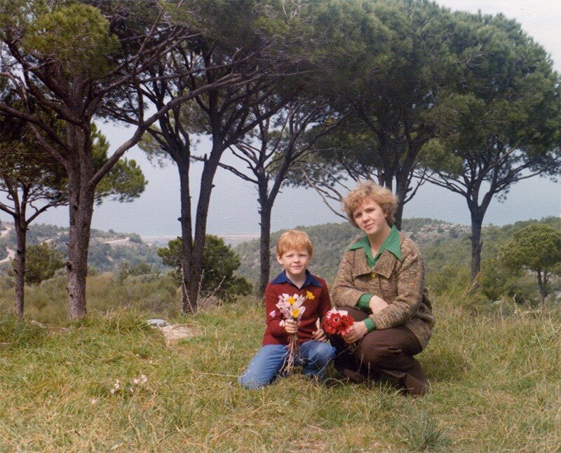
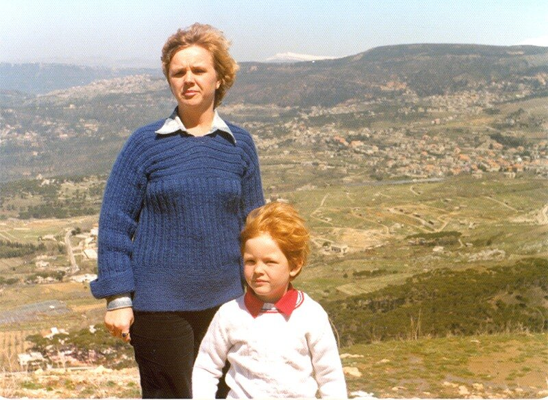

Я знаю о счастье все.
Я знаю, какой у счастья запах. Когда в детском саду собирали яблоки и складывали их под тент – яблоки эти пахли счастьем.
Когда наступало утро после ночной рыбалки и солнце, распалясь, нагревало землю вокруг – земля пахла счастьем.
Я знаю как приходит счастье. Под Новый год. Открывается дверь и на пороге стоит счастье и судьба всей жизни.
Я знаю счастье, когда один за всех. Когда подводная лодка, стремительно набирая дифферент на нос, несется в глубину, когда ты не в состоянии ничего предпринять и лишь смотришь на циферблат дифферентометра, стрелка которого уже перевалила за 45 градусов, а это значит что вот-вот сорвет насосы первого контура реактора и сработает аварийная защита, и остановятся турбины, работающие полный назад - и тогда катастрофа неминуема, когда штурман из своей рубки докладывает «Под килём ноль…», когда все зависит только от одного человека – боцмана на горизонтальных рулях, и боцман не подводит – лодка вырывается на поверхность и потом многотонной тушей плюхается в море .
Я знаю счастье, когда все за одного. Когда в ночной сон врывается крик: «Наших бьют!», когда единым порывом вся рота поднимается, на ходу надевая тельняшки и наматывая на крепкие, хотя и мальчишеские еще ладони кожаные ремни с латунными бляхами, проносится мимо ошарашенных дежурных на КПП и потом возвращается в кубрик уже вместе с отбитыми у местных бандюг товарищами .
Я знаю, как выглядит счастье…


Я знаю, что счастье может прийти вместе с солнцем и ветром с гор…

Я знаю, как уходит счастье…
И я знаю, ЧТО ушедшее счастье оставляет после себя.
Я знаю, что такое счастье.